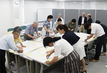

事前・当日の進行など意見交換
第32回埼玉県原爆死没者慰霊式実行委員会
7月12日(水)14：00より、埼玉県生協連・会議室にて第4回実行委員会を開催し、14団体（しらさぎ会、県婦連、県生協連、原水協(佐藤)､平和センター､埼玉合唱団､被爆体験聞き書き実行委員会､コープみらい､パルシステム埼玉､生活クラブ､さいたま住宅生協､医療生協さいたま、婦人民主クラブ、ワーカーズコープ）20人が出席しました。
はじめに、田中実行委員長が「7/7に核兵器禁止条約は採択され発効は12月頃、こういう中でおこなわれる画期的な慰霊式になります。」と挨拶されました。
|  |
| 平和の願い模造紙への貼り付け作業 |
【議題】
1．報告事項(事務局より報告)
（1）第3回実行委員会報告
（2）臨席とメッセージ状況
（3）しおり
（4）座席表
（5）若い世代からの平和の願い
核兵器禁止条約交渉会議ニューヨーク行動参加の竹腰さんから報告いただきます。
（6）平和の願いメッセージカードと折り鶴関連
①平和の願いメッセージカード・原爆パネル(事務局より展示イメージに沿って報告)
医療生協さいたま101枚、パルシステム埼玉177枚、コープみらい276枚、埼玉県生協連10枚で564枚。実行委員会終了後、模造紙への貼り付け作業します。
②折り鶴
（7）ホール打合(7/5)
（8）2018年度会場関連
さいたま市民会館うらわホール2018年分抽選会(7/4)に参加しましたが外れました。1月4日の浦和コミセン多目的ホール抽選会に参加します。
2．協議・確認事項
（1）役割分担(式次第)
次第に沿ってしらさぎ会等の役割分担、平和の灯の紹介者の変更、閉会挨拶者を確認しました。
（2）進行表
（3）シナリオ
埼玉県の名簿奉納時の原稿、議員関係の挨拶者の検討と依頼など報告し、修正部分について意見交換しました。
（3）事前・当日の準備・スケジュール
①スタッフの協力について(慰霊碑掃除、事前準備、当日スタッフ、昼食)
②レイアウト
ヒバクシャ国際署名コーナーでカセットデッキを使用し署名の歌を流します。
3．その他
（1）県庁記者クラブリリース文(案)
4．次回実行委員会
8月30日(水)14:00～埼玉県生協連・会議室